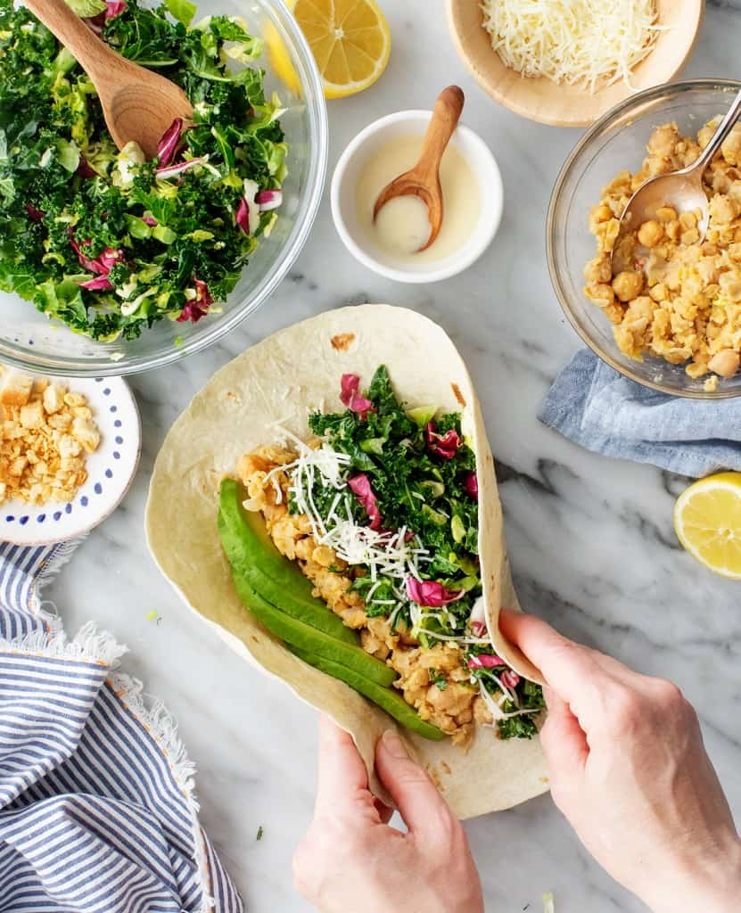

Healthy Lunch Wraps
200–220 calories

When it comes to lunch, I usually gravitate towards salads or bowls, but when I have the ingredients to these healthy lunch wraps on hand, I’m 100% on team sandwich. They’re fresh and satisfying, filled with a crisp kale salad, creamy avocado, and hearty chickpeas. But the secret ingredient that makes them so flavorful is the dressing. It’s a sharp, savory honey-Dijon vinaigrette that I whizz together in the blender so that it’s creamy and emulsified.
When I assemble these sandwich wraps, I mash some of the dressing with the chickpeas, toss some with the veggies, and serve the rest on the side for dipping. I love that one punchy sauce is all it takes to transform simple ingredients like chickpeas and kale into these delicious, healthy wraps. If you ask me, they’re the perfect weekday lunch.
Healthy Lunch Wraps Recipe Ingredients
- The dressing! It’s a zingy mix of olive oil, lemon juice, white wine vinegar, Dijon mustard, honey, garlic, and salt. If you like, you can blend in a little Parmesan cheese to make it extra-creamy..
- Chickpeas – They add heft to these lunch wraps. To season them, I mash them with salt, pepper, and some of the dressing.
- Veggies – I make a crunchy salad out of torn kale, shaved Brussels sprouts, and radicchio. Together, these greens create a nice mix of colors and flavors, but if you want to simplify the lunch wraps, you could use all kale instead..
- Avocado – I love how its creamy texture plays off the crisp greens.
- Parmesan cheese – For rich, nutty flavor. If you’re vegan, feel free to skip it.
- And extra-large tortillas – To wrap it all up!
How to Assemble These Sandwich Wraps
- Once you blend up the dressing, these chickpea salad wraps are easy to put together
First, mash the chickpeas. Combine them with a little of the dressing, salt, and pepper, and mash until they’ve mostly broken down. I like to leave some chickpeas whole for texture.
Then, toss the salad Then, toss the salad
Finally, assemble the wraps! Divide the chickpeas, the kale salad, and the avocado among the tortillas, and sprinkle in some Parmesan if you’re using it. Wrap and roll each tortilla around the fillings, slice the veggie wraps in half, and serve with the remaining dressing for dipping.